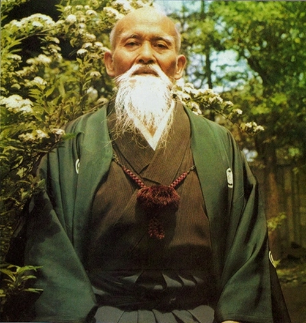
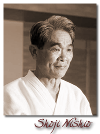
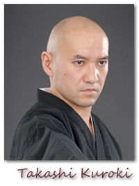
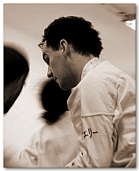

Akiktől mi is tanulunk

Ueshiba Morihei
(1883. december 14. – 1969. április 26.) az aikido megalapítója. Egyike a három nagy japán budo mesternek, ma „legyőzhetetlen harcosként” hivatkoznak rá.
Többet akarok tudni róla...

Shoji Nishio
(1927 December 5 – 2005 Március 15)
8 danos Aikikai Shihan.
Aomori prefektúrában született Japánban. 1951-ben csatlakozott a Hombu Dojo-hoz és 1955 körül kezdett oktatni. Morihei UESHIBA közvetlen tanítványa volt. Az Aikido tanulás előtt foglalkozott más harcművészetekkel, mint judo (6 dan), karate (Jinen-ryu 5th dan), iaido (7 dan) és jodo. Ezen tapasztalatait ötvözve saját Aikido stílust hozott létre, melyben nagyon fontosnak tartotta a bot és a kard használatának ismeretét. Nevéhez fűződik az Aiki Toho Iaido ( Nishio-ryu Iai) létrehozása is. 2003-ban a Japán Harcművészeti Szövetségtől megkapta a "Budo Kyoryusho" elismerést az Aikido népszerűsítéséért. Több mint 20 éven keresztül oktatott Aikidot észak Európában és Amerikában. 2005 márciusában halt meg 77 éves korában.

Takashi Kuroki
5.dan Nishio-ryu Iai
5. dan Nishio-ryu Jodo
5.dan Nishio-ryu Taido,
5.dan Aikido Aikikai shidoin
1970, február 19.-én született. 19 éves korában kezdett Aikidozni a Kochi Egyetemen Takaichi Sayanagi shihannál. 1995-ben a Kyushu Egyetem kémia szakán végzett és kezdett dolgozni egy kémiai laborban Takaoka városban. Koji Yoshida shihannál tanult Aikidot az Aikikai Takaoka szervezetbe és ekkor kezdett gyakorolni Nishio-ryu Iai-t, tradicionális Iaido-t , Jodo-t és Naginata-t (Tendo-ryu) 1999-ben Nishio sensei Kievben tartott szemináriumot, ahol mint uke vett részt a mester és Yoshida mester mellett. 2000 májusa óta Kievben él és az ott élőknek tanítja szisztematikusan a Nishio Budo-t. 2003-ban létrehozta a Kiev Aikido és Küzdősport Szövetséget Ukrajnában.

Németh Ferenc
3. dan Aikikai Aikido
1. kyu Aiki Toho Iai
A Yurusu Aikido iskola vezetője.